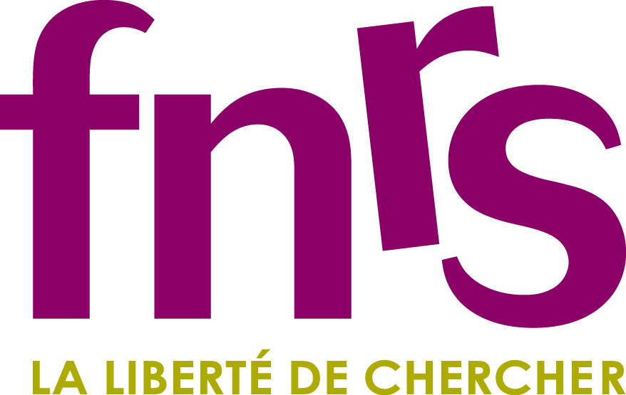
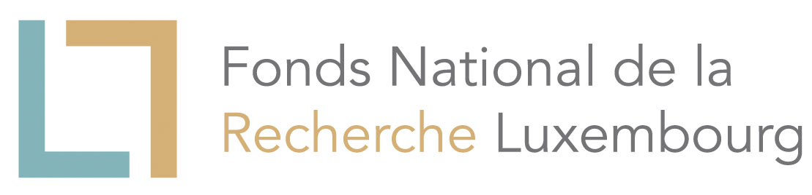

Phonon website
Visualize phonons, excitons, structures, and isosurfaces
This repository contains the web applications behind the phononwebsite project. It started as a phonon visualization tool and now also includes dedicated pages for exciton wavefunctions and crystal structures / charge-density isosurfaces.
Project repository: https://github.com/henriquemiranda/phononwebsite
The phonon viewer lets you inspect phonon dispersions and animate vibrational modes. The exciton viewer shows exciton wavefunctions on real-space grids. The structure viewer can display crystal structures, repetitions, and charge-density isosurfaces with either marching cubes or raymarch rendering.
How to use?
In the phonon section you can click any point in the dispersion and see an animation of the corresponding lattice vibration. The website can display built-in example datasets, contributed materials, Materials Project OpenData-derived phonons, and locally hosted converted datasets.
If you want to inspect your own calculations, the phonon viewer currently supports data from phonopy, Abinit, Quantum Espresso, and VASP.
phonopy
You can visualize your own phonopy files by clicking on the Choose files button and selecting a band.yaml file. The following options should be present in the band.conf file:
EIGENVECTORS = .TRUE.
BAND_CONNECTION = .TRUE.
BAND_LABELS = Gamma M K
BAND = (x1,y1,z1) (x2,y2,z2) (x3,y3,z3)This works with newer phonopy versions where band.yaml carries the structural information needed by the website.
Abinit
To read a phonon dispersion from Abinit you need python scripts to convert the phonon dispersion data to the internal .json format used by the website.
The recommended way to do so is to use abipy. Once you have generated a DDB file, you can create a JSON file with:
$ abiopen.py mp-149_DDB
In [1]: phbst, phdos = abifile.anaget_phbst_and_phdos_files()
In [2]: phbst.phbands.view_phononwebsite()If you already have a PHBST.nc netcdf file produced by anaddb you can visualize it with:
$ abiview.py phbands example_PHBST.nc -webAlternatively you can use the scripts provided in the Github page. To install them just do:
$ pip install -e ./pythonIn the folder where you ran anaddb you will find a netCDF file (if you compiled Abinit with netCDF support) with the name anaddb.out_PHBST.nc. To convert it to .json format just run:
$ read_anaddb_phonon.py anaddb.out_PHBST.nc <name_of_your_material>You can then select the resulting .json file with the Choose files button on the phononwebsite.
Quantum Espresso
To read a Quantum Espresso calculation you need two files <prefix>.scf and <prefix>.modes. The first one is the input file for pw.x the second one can be generated with dynmat.x. The file that should be used is the one set with the 'filout' tag in the dynmat input file as in it the modes are normalized with the atomic masses. After installing the python scripts (same as in the case of an Abinit calculation) you can obtain the .json files:
$ read_qe_phonon.py prefix <name_of_your_material>You can then select the resulting .json file with the Choose files button.
VASP
To read a VASP calculation you need the vaspout.h5 file containing a phonon dispersion calculation. You can find the instructions of how to compute the phonon dispersion from a supercell calculation in the VASP wiki
$ read_vasp_phonon.py vaspout.h5 <name_of_your_material>You can then select the resulting .json file with the Choose files button.
Pages using this visualization tool
This visualization tool is currently also used in:
Features
You can export an animated .gif with a particular mode using the gif button. WebM export is also available in browsers that support native MediaRecorder.
If you want to share your own data with someone else, you can pass URL parameters in the following format:
http://henriquemiranda.github.io/phononwebsite/phonon.html?tag1=a&tag2=bThe available tags are:
json = link to a json file
yaml = link to a yaml file
name = name of the materialHere are some examples of what can be added to the website link:
- ?yaml=http://henriquemiranda.github.io/phononwebsite/test/fixtures/phonopy/band.yaml
- ?json=http://henriquemiranda.github.io/phononwebsite/data/localdb/graphene/data.json
You are free to use the images generated with this website in publications and presentations as long as you cite this work (a link to the website is enough). For the license terms of data imported from external databases such as phonodb, please refer to the original source.
In polar materials, LO-TO splitting may be missing in older PhononDB-derived data.
File Format
Here is a short description of the internal .json format used to show the phonon dispersions and animations on the website.
name: name of the material that will be displayed on the website (string)
natoms: number of atoms (integer)
lattice: lattice vectors (3x3 float array)
atom_types: atom type for each atom in the system (array strings)
atom_numbers: atom number for each atom in the system (array integers)
formula: chemical formula (string)
repetitions: default value for the repetitions (array 3 integers)
atom_pos_car: atomic positions in cartesian coordinates (Nx3 float array)
atom_pos_red: atomic positions in reduced coordinates (Nx3 float array)
highsym_qpts: list of high-symmetry q-points (Nx3 float array)
qpoints: list of q-points in reciprocal space (Nx3 float array)
distances: list distances between the qpoints (Nq float array)
eigenvalues: eigenvalues in units of cm-1 (Nqx(N\*3))
vectors: eigenvectors (NqxN)
line_breaks: list of tuples with start and end of each segment (Optional)Contribute
The project is under active development.
Repository layout
src/: frontend source code for rendering, UI wiring, parsers, and utilitiessrc/static_libs/: vendored browser-side static librariescss/: stylesheets for the website pagestest/: JavaScript tests and fixturespython/phononweb/: Python package and CLI scriptspython/phononweb/tests/: Python test suitebuild/: generated deploy outputdata/localdb/,data/contribdb/,data/mpdb/: runtime material databases.github/workflows/: CI and deploy workflows
Conventions
- add new frontend logic in
src/, not in inline HTML scripts - add JavaScript tests in
test/as*.test.mjs - put reusable test data in
test/fixtures/ - add Python code in
python/phononweb/and tests inpython/phononweb/tests/ - keep generated files out of source folders
- if you move files, update the matching scripts and workflow paths in the same change
Local development
Install dependencies:
npm installBuild the local site into build/:
npm run buildThe local build links build/data to data/ to avoid duplicating the datasets. Use npm run build:site for a self-contained deployment build that copies the data.
Start a local server from build/:
cd build
python3 -m http.serverThen open one of:
- http://localhost:8000/phonon.html
- http://localhost:8000/exciton.html
- http://localhost:8000/structure.html
- http://localhost:8000/index.html
Useful commands:
npm run build:sitebuilds the deployable website outputnpm run generate:indexregeneratesbuild/index.htmlfromREADME.mdandref_index.htmlnpm testruns the JavaScript test suitenpm run test:pyruns the Python test suite
Keeping Git storage small
PhononDB files use Git LFS on the source branch. The generated gh-pages branch contains full dataset files, so deployment keeps only its latest commit. For development, clone the source branch without fetching deployment branches:
git clone --single-branch --branch master git@github.com:henriquemiranda/phononwebsite.gitIn an existing clone, exclude the generated deployment branch from normal fetches (requires Git 2.29 or newer):
git config --add remote.origin.fetch '^refs/heads/gh-pages'Apply the same exclusion to any fork remote used for source reviews. This prevents future downloads of deployment history. An explicit git fetch origin gh-pages can still download a deployment when needed.
To reclaim space already used by deployment history, drop the local references and prune the unreachable objects (this also discards reflog history):
git branch -D gh-pages # if a local branch exists
git update-ref -d refs/remotes/origin/gh-pages # repeat for each remote
git reflog expire --expire=now --all
git gc --prune=now
git lfs pruneYou can leave your suggestions and feature requests here:
https://github.com/henriquemiranda/phononwebsite/issues
Source code and history: https://github.com/henriquemiranda/phononwebsite
If you would like to see some of your calculations published on this website, please contact me.
Authors
This project is the continuation of work started by Raoul Weber during an internship at the University of Luxembourg in the Theoretical Solid State Physics group under the supervision of Ludger Wirtz.
It later evolved into a broader browser-based visualization toolkit. The original JSmol-based approach was replaced by a custom Three.js / WebGL viewer (VibCrystal), and the project now also supports user-provided calculations and additional pages for excitons and structures.
My personal webpage:
http://henriquemiranda.github.io
Contact me:
miranda.henrique at gmail.com
Acknowledgments & Funding
Ludger Wirtz for the original idea and important scientific advices. Atsushi Togo the creator of phonopy for providing phonon dispersion data from his phonodb phonon database. José Pedro Silva for very helpful advices on technical issues and the best web technologies to use. Guido Petreto and Matteo Giantomassi for many insightful comments, debugging, feature suggestions and the interface with abipy. and for the implementation of the VESTA mode. José María Castelo for adding the possibility to change the covalent radii of the atomic species which is used to draw the bonds between the atoms.
VASP Software GmbH (2019-present): http://www.vasp.at
Fonds National de la Recherche Scientifique (2017-2019): http://www.fnrs.be/

Université Catholique de Louvain (2017-2019): https://uclouvain.be
Fonds National de la Recherche Luxembourg (2013-2017): http://www.fnr.lu/

University of Luxembourg (2013-2017): http://wwwen.uni.lu/
Software used for this project
- WebGL visualization using
Three.js: http://threejs.org/ - phonon dispersion plots using
Highcharts: http://www.highcharts.com/ - GIF export using
CCapture.jsandgif.js: https://github.com/spite/ccapture.js, http://jnordberg.github.io/gif.js/ Abinit: http://www.abinit.org/Abipy: https://github.com/abinit/abipyQuantum Espresso: http://www.quantum-espresso.org/phonopy: http://atztogo.github.io/phonopy/VASP: http://www.vasp.at